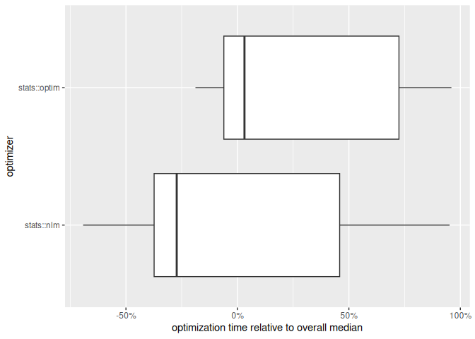

The ino R package provides a framework for analyzing the role of initialization in numerical optimization. It allows for systematic comparisons of different initialization strategies and optimization algorithms using a unified R6 object called Nop. For detailed examples and usage guidance, please have a look at the package vignettes.
Example
The Ackley function has multiple local minima and one global minimum at the origin. We define
- the numerical optimization problem as a
Nopobject, - two optimization algorithms
stats::nlm()andstats::optim(), and - 40 randomly drawn initial values:
library("ino")
set.seed(1)
Nop_ackley <- Nop$new(f = TestFunctions::TF_ackley, npar = 2)$
set_optimizer(optimizeR::Optimizer$new("stats::nlm"))$
set_optimizer(optimizeR::Optimizer$new("stats::optim"))$
initialize_random(runs = 40)We can visualize the function surface along with the initial values:

Next, we optimize the function via the previously defined initial values and optimizers:
Nop_ackley$optimize()In this example, stats::nlm() appears to be both faster…
Nop_ackley$results |>
ggplot2::autoplot("seconds", group_by = "optimizer", relative = TRUE) +
ggplot2::scale_x_continuous(labels = scales::percent_format()) +
ggplot2::labs(
"x" = "optimization time relative to overall median",
"y" = "optimizer"
)
… and more effective at locating the global minimum:
Nop_ackley$optima(digits = 2, group_by = "optimizer")
#> $`stats::nlm`
#> # A tibble: 5 × 2
#> value n
#> <dbl> <int>
#> 1 0 13
#> 2 2.58 13
#> 3 3.57 10
#> 4 5.38 3
#> 5 4.88 1
#>
#> $`stats::optim`
#> # A tibble: 5 × 2
#> value n
#> <dbl> <int>
#> 1 2.58 17
#> 2 0 12
#> 3 3.57 5
#> 4 4.88 3
#> 5 5.38 3
#>
#> attr(,"class")
#> [1] "Nop_optima" "group_by" "list"Overall, (only) 25% of of the initializations successfully converged to the global minimum.
Contact
Have a question, found a bug, request a feature, want to contribute? Please file an issue.
Related R packages
The {trackopt} package tracks parameter value, gradient, and Hessian at each iteration of numerical optimizers in
R. This can be useful for analyzing optimization progress, diagnosing issues, and studying convergence behavior.The {optimizeR} package provides a unified object-oriented framework for numerical optimizers in
R. Allows for both minimization and maximization with any optimizer, optimization over more than one function argument, measuring of computation time, setting a time limit for long optimization tasks.The {ao} package implements an iterative process that optimizes a function by alternately performing restricted optimization over parameter subsets. Instead of joint optimization, it breaks the optimization problem down into simpler sub-problems. This approach can make optimization feasible when joint optimization is too difficult.